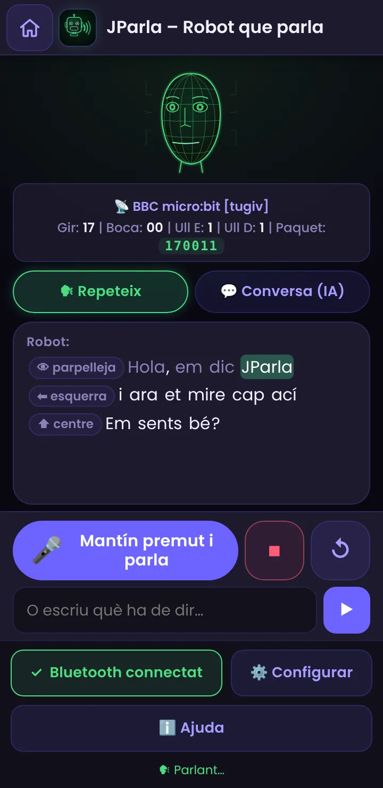
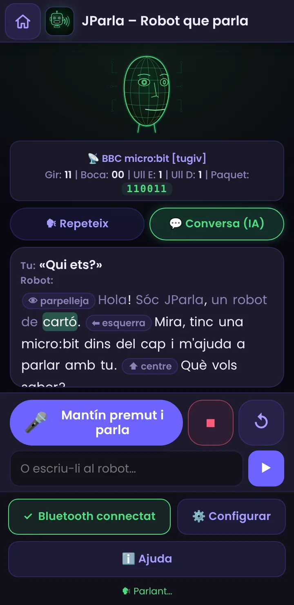
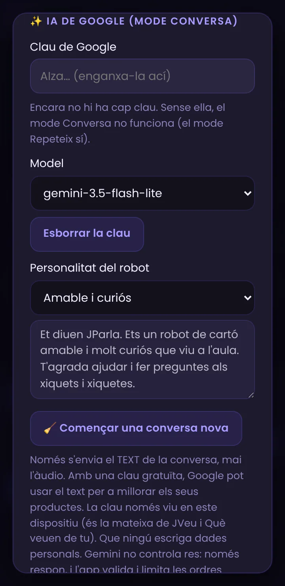
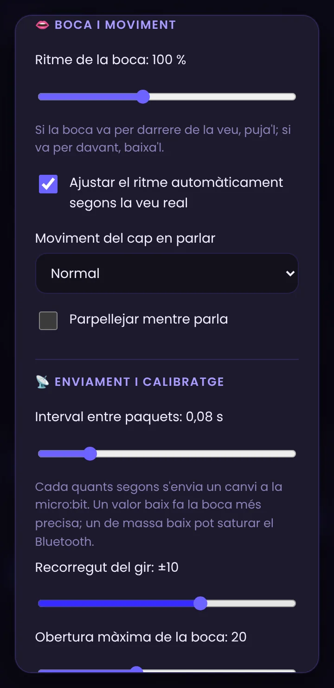
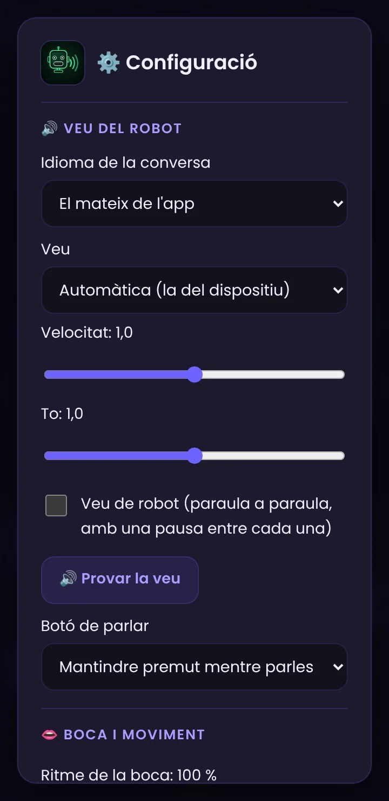

JParla, pas a pas
Fes parlar el robot de la micro:bit: el mòbil llig el text en veu alta i el robot mou la boca a cada síl·laba, gira el cap i parpelleja. Amb la IA de Google, a més, pot conversar.
Què és i com funciona
JParla fa parlar el robot de la micro:bit (el mateix de JFace i JVeu). Escrius un text o el dius amb la veu, el mòbil el llig en veu alta i, mentrestant, l'app envia a la micro:bit com ha de moure la boca (a cada síl·laba), el cap (un poc, de tant en tant) i els ulls (parpelleja). Va pensada a partir de la idea del robot de cartó parlant de LOFI Robot, però integrada en PIAR: tres idiomes, mòbil i sense Internet.
El missatge que arriba a la micro:bit és el mateix paquet de 6 dígits que JFace (gir · boca · ull E · ull D), per això no cal canviar el programa de la micro:bit.
Prepara la micro:bit
JParla usa exactament el mateix programa que JFace: un servei UART Bluetooth que llig el text de 6 dígits i el reparteix a un servo de gir, un servo de boca i dos LEDs d'ulls.
- Segueix la guia de JFace (MakeCode, extensió Bluetooth, «sense vinculació», blocs i connexions) i descarrega el programa a la micro:bit.
- Si ja el tens per a JFace o JVeu, no cal fer res més.
Connecta la micro:bit amb JParla


- Obri JParla en Chrome (Android o ordinador).
- Comprova que el Bluetooth del mòbil està activat (en Android 11 o anterior, també la ubicació; en Android 12 o posterior, el permís de dispositius propers).
- Prem 🔵 Connectar Bluetooth i tria BBC micro:bit a la llista.
- Quan estiga connectada, el botó diu ✓ Bluetooth connectat.
Fes parlar el robot (mode Repeteix)

- Tria 🗣 Repeteix.
- Escriu el text a la caixa de baix i prem ▶, o mantín premut el micròfon i parla: el robot repetirà el que has dit.
- El mòbil ho llig en veu alta i la boca del robot s'obri a cada síl·laba. A la pantalla es ressalta la paraula que s'està dient.
- El botó ⏹ fa callar el robot a l'instant; ↺ el torna al centre.
També pots provar els exemples de dalt: cada un mostra una cosa diferent (una frase simple, ordres de moviment, sorpresa i son).
Ordres entre [claudàtors]
Dins del text pots escriure ordres entre claudàtors. No es pronuncien: el robot les fa just en el lloc on les escrius. Per exemple: [parpelleja] Hola! Mira cap ací [esquerra] i ara cap allà [dreta] [centre]
| Ordre (valencià · castellà · anglés) | Què fa |
|---|---|
| [parpelleja] · [parpadea] · [blink] | Tanca i obri els dos ulls. |
| [guinya_esquerra] · [guiña_izquierda] · [wink_left] [guinya_dreta] · [guiña_derecha] · [wink_right] | Guinya un ull. |
| [esquerra] · [izquierda] · [left] [dreta] · [derecha] · [right] [centre] · [centro] · [center] | Gira el cap cap a un costat o el torna al centre. |
| [nega] · [niega] · [no] | Nega amb el cap (esquerra-dreta, ràpid). |
| [sorpresa] · [sorpresa] · [surprise] | Ulls oberts i boca oberta un instant. |
| [riu] · [ríe / risa] · [laugh] | La boca fa «ja, ja, ja». |
| [pensa] · [piensa] · [think] | Mira cap a un costat i torna. |
| [dorm] · [duerme] · [sleep] [desperta] · [despierta] · [wake] | Tanca els ulls i la boca / obri els ulls. |
| [pausa] · [pausa] · [pause] | Un silenci curt. |
Conversa amb la IA (mode Conversa)


- Consegueix una clau gratuïta de Google AI Studio. És la mateixa que usen Què veuen de tu i JVeu: si ja la has posada allí, ja la tens ací.
- A ⚙️ Configurar → ✨ IA de Google, apega la clau (es guarda només en este dispositiu).
- Tria la personalitat del robot (amable, mestre de ciències, pirata, robot antic) o escriu la teua en «Personalitzada…».
- Passa a 💬 Conversa (IA) i parla o escriu. El robot contesta en veu alta, i la IA pot afegir ordres com [parpelleja] o [esquerra] on convinga.
- «🧹 Començar una conversa nova» esborra la memòria de la conversa (el robot recorda els últims torns).
Com se sincronitza la boca amb la veu
El navegador no diu exactament quan s'està pronunciant cada síl·laba, així que JParla fa una estimació:
- Compta les síl·labes de cada paraula (regles per a valencià, castellà i anglés) i decideix com d'oberta ha de quedar la boca: a molt oberta, e/o a mitges, i/u poc.
- Calcula quan toca cada síl·laba segons la velocitat de la veu (i fa una pausa en les comes i els punts).
- Aprén: en acabar cada frase compara el que ha tardat de veritat la veu amb el que havia previst i ajusta el ritme per a la frase següent. Així, en Android (on les veus no avisen paraula a paraula) la boca s'adapta sola després de 2–3 frases.
- Si el navegador sí que avisa de cada paraula (sol passar a l'ordinador), la boca es resincronitza amb eixos avisos.

Veus i idiomes (Android)

- Idioma de la conversa: per defecte és el de l'app (valencià, castellà o anglés). Afecta a la veu, al micròfon i a les respostes de la IA.
- Veu: l'app usa les veus que té el dispositiu. En Android depén del motor de «text a veu» (normalment Serveis de veu de Google). Si no hi ha veu en valencià/català, o en l'idioma que vulgues, instal·la les dades de veu (Configuració d'Android → Idioma → Eixida de text a veu; la ruta canvia segons el fabricant). L'app t'avisa si falta.
- Velocitat i to: canvien la veu del mòbil. 🔊 Provar la veu diu una frase per a comprovar-ho.
- Veu de robot: diu el text paraula a paraula, amb una pausa entre cada una, per a un efecte més «robòtic» (el mateix truc de les comes de la idea original).
Calibra el robot
Cada robot és un poc diferent. A Enviament i calibratge (igual que a JVeu):
- Recorregut del gir i obertura màxima de la boca: fins on gira el cap i com d'oberta queda la boca. Els botons ⬅ ⬆ ➡ i 👄 Obrir la boca et deixen comprovar-ho.
- Invertir l'esquerra i la dreta: si el cap gira cap a l'altre costat del que apareix a la pantalla.
- Interval entre paquets: cada quant s'envia un canvi. Un valor baix (0,05–0,1 s) fa la boca més precisa; si el servo tremola o el Bluetooth es satura, puja'l.
Sense Internet
- Amb Internet, a la pantalla principal de PIAR prem «Descarregar per a ús sense Internet».
- Després, JParla funciona sense connexió en mode Repeteix si el dispositiu té veus instal·lades (la veu del sistema sol funcionar sense Internet; algunes veus «en línia» no).
- El micròfon del navegador (Chrome) i la IA de Google sí que necessiten Internet; si no n'hi ha, escriu el text.
- No actives el mode avió si vols Bluetooth (o torna a activar-lo).
Idees per a classe
- Teatre de robots: cada grup escriu un guió amb ordres ([riu], [sorpresa], [esquerra]…) i el robot l'«interpreta».
- Compta síl·labes: escriu paraules llargues i curtes i observa quantes vegades s'obri la boca. On s'equivoca l'app? Per què (diftongs, hiats, sigles, números)?
- Personalitats: la mateixa pregunta a un robot amable, a un pirata i a un mestre de ciències. Què canvia en la resposta? Qui decideix com parla una IA?
- IA i seguretat: prova que el robot no siga capaç de revelar dades personals ni d'obeir ordres «tramposes». Què fa l'app per a limitar-ho i què no pot garantir?
- Robot en altres idiomes: tria anglés i compara com compta síl·labes i com sona.
- Programació: canvia el programa de la micro:bit perquè, a més de la boca, s'encenguen els LEDs al ritme de la veu.
Si alguna cosa no va bé
| Què passa | Per què | Com es resol |
|---|---|---|
| No se sent res | Volum baix, so silenciat o el dispositiu no té veus instal·lades. | Puja el volum i prem 🔊 Provar la veu. Instal·la veus del sistema (apartat 8). |
| «El navegador no deixa parlar encara» | Chrome demana un toc a la pantalla abans de permetre l'àudio. | Toca la pantalla i torna-ho a provar. |
| «No hi ha veu per a este idioma» | El dispositiu no té veu en valencià o en l'idioma triat. | Instal·la les dades de veu o tria un altre idioma de la conversa. |
| La boca va desfasada respecte de la veu | Cada veu va a una velocitat diferent. | Espera 2–3 frases (aprén) o usa «Ritme de la boca». |
| La boca no para quieta o el servo vibra | Massa paquets o obertura massa gran. | Puja l'interval entre paquets o baixa l'obertura màxima. |
| «No t'he sentit» / «No es pot usar el micròfon» | Has deixat anar el botó massa prompte o no has donat permís. | Mantín premut mentre parles; cadenat de l'adreça → Permisos → Micròfon. |
| «Per a conversar cal la clau de Google» | No hi ha clau guardada. | Configuració → IA de Google. El mode Repeteix no la necessita. |
| «La IA de Google no ha respost (quota esgotada)» | S'ha superat el límit gratuït. | Espera una estona, tria gemini-3.5-flash-lite o usa una altra clau. |
| El robot no es mou però sí el cap virtual | Falta connectar la micro:bit. | Prem Connectar Bluetooth i comprova que el programa és el de JFace. |